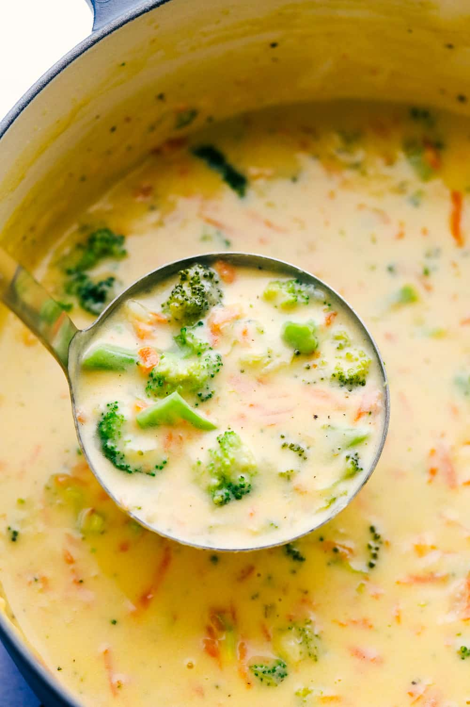

Broccoli Cheddar Recipe

Yummy Yummy in my Tummy
Delicious creamy soup of Cheddar and Broccoli.
Ingredients
- 1 1/2 Broccoli Chopped Floret
- 2 1/2 Cups of Shredded Sharp Cheddar
- 1 Long Carrot
- 2 Cups of Milk
- 1 Tbsp of Butter
- 1/2 an Onion(White)
- 2 Cups of Chicken Stock
- 1/4 Cup of Melted Butter
- Salt and Pepper to Taste
Steps
- Melt 1 tablespoon butter in a skillet over medium-high heat. Saute onion in hot butter until translucent, about 5 minutes. Set aside.
- Whisk 1/4 cup melted butter and flour together in a large saucepan over medium-low heat. Continue to whisk and cook , adding 1 to 2 tablespoons of milk if necessary to keep the flour from burning, 3 to 4 minutes.
- Gradually pour milk into flour mixture while whisking constantly. Stir chicken stock into milk mixture. Bring to a simmer; cook until mixture is thickened, about 20 minutes. Add broccoli, carrots, sauteed onion, and celery; simmer until vegetables are tender, about 20 minutes.
- Stir Cheddar cheese into vegetable mixture until cheese melts. Season with salt and pepper to taste.